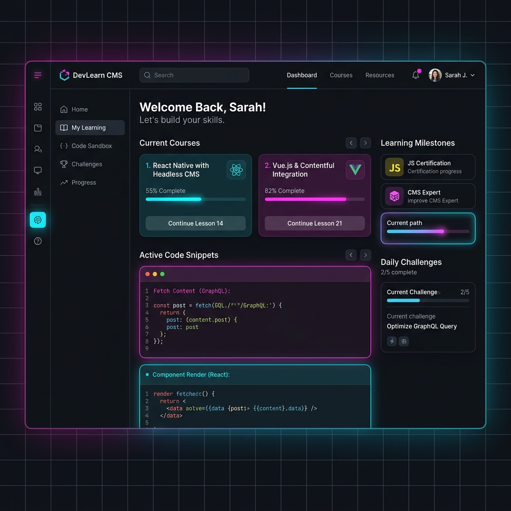
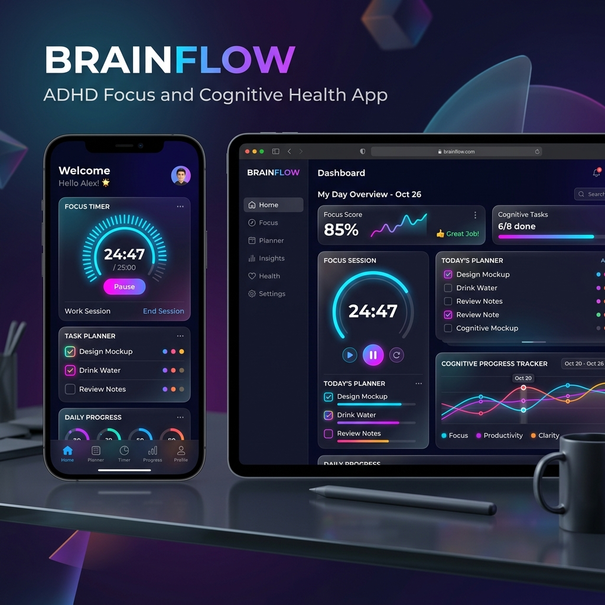

Clinical Excellence & Intelligent Automation
Hi, I'm Abhishek
Kashyap
Expertise in
Based in Gwalior

Clinical Excellence & Intelligent Automation
Based in Gwalior

I am a clinical professional and technical innovator with a Bachelor of Medicine and Bachelor of Surgery (MBBS) from Mari State University, Russia. Parallel to my medical practice, I have established a strong engineering foundation specializing in WordPress architecture, modern vibe-coding methodologies, and AI integration workflows. Driven by deep professional curiosity, I operate at the intersection of healthcare, intelligent automation, and technical communication. I leverage artificial intelligence to design high-performance digital ecosystems, build responsive web interfaces, and generate authoritative, medically validated content.
Skills Matrix
Experience
Education & Milestones
Executed multi-department diagnostic triage, physical evaluations, and inpatient support mechanisms during clinical medicine tenures.
Deployed customized web portals for private corporate consultancies under non-disclosure frameworks. Designed and monetized autonomous media assets utilizing advanced programmatic monetization protocols (Google AdSense).
National Board of Examinations (NBE) - Prepared for official programmatic registration and clinical practice workflows in India.
Deep dive research tracking multi-agent structures, autonomous script scaling, and context programmatic mapping.
Mari State University (MarSU), Russia. Global clinical health tracking and standardized systemic medical residency practice.
Comprehensive self-directed technical curriculum exploring full architectural core mastery.
Rishi Galav Public School. Accelerated focus metrics across pure Science and foundational Mathematics tracks.
Providing evidence-based analytical assessments, precision medical case studies, and advanced digital health consult modalities.
Designing high-throughput, customized web architectures optimized via rapid vibe-coding frameworks and AI autonomous system triggers.
Engineering premium SEO-driven healthcare publications, technical documentation, and authoritative pharmacological scripts leveraging clinical expertise.

High-security custom portal optimized for operational execution, speed indexing, and fluid user journey models.
Under NDA
Developing unique technical solutions utilizing modern vibe-coding methodologies. Concepts kept secure to preserve proprietary layout models and intellectual property mechanics.
abhijeet.kashyap20@gmail.com
+91 9752581403